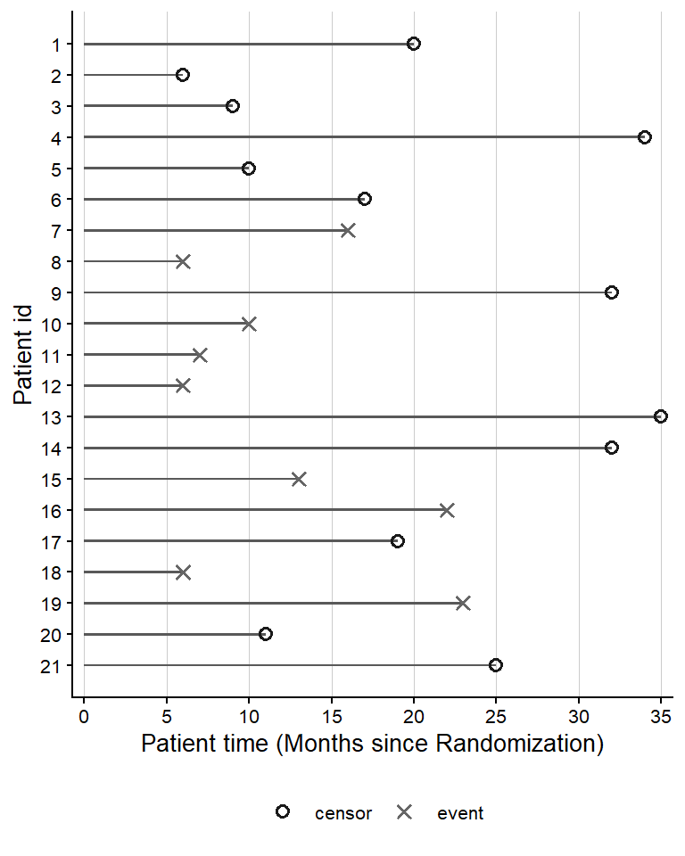
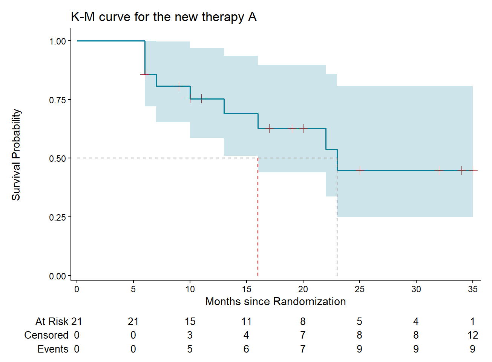
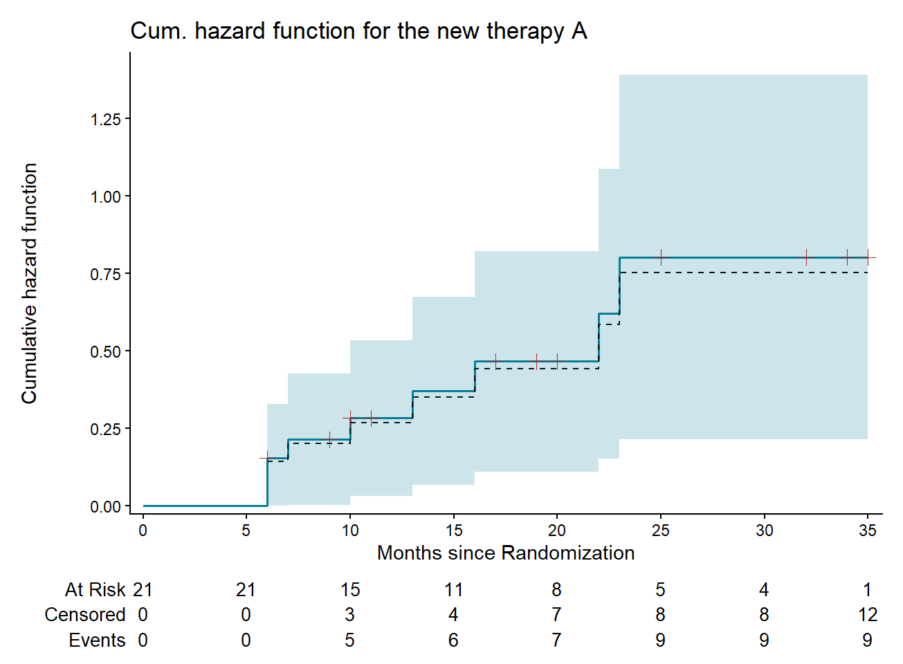
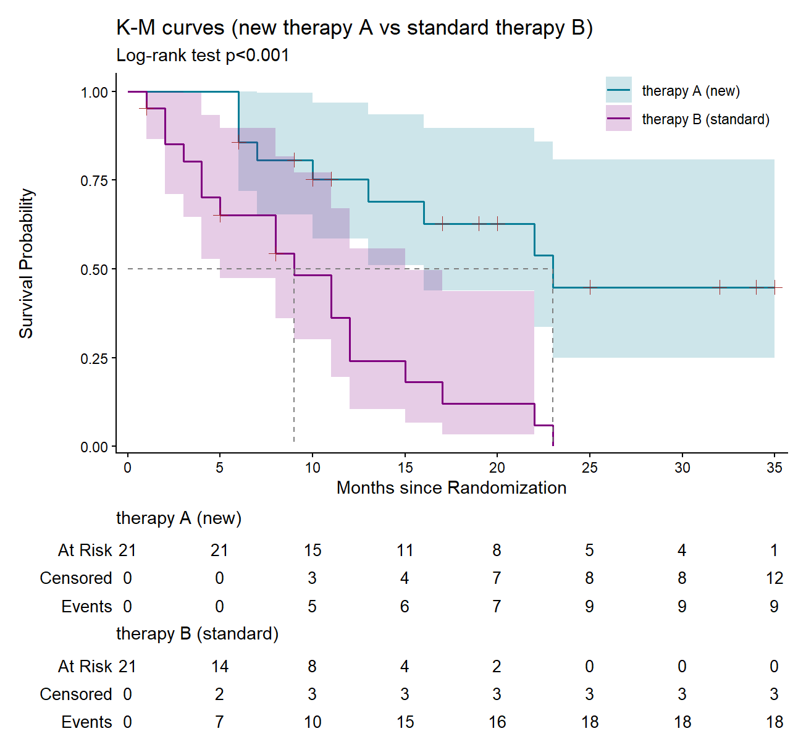
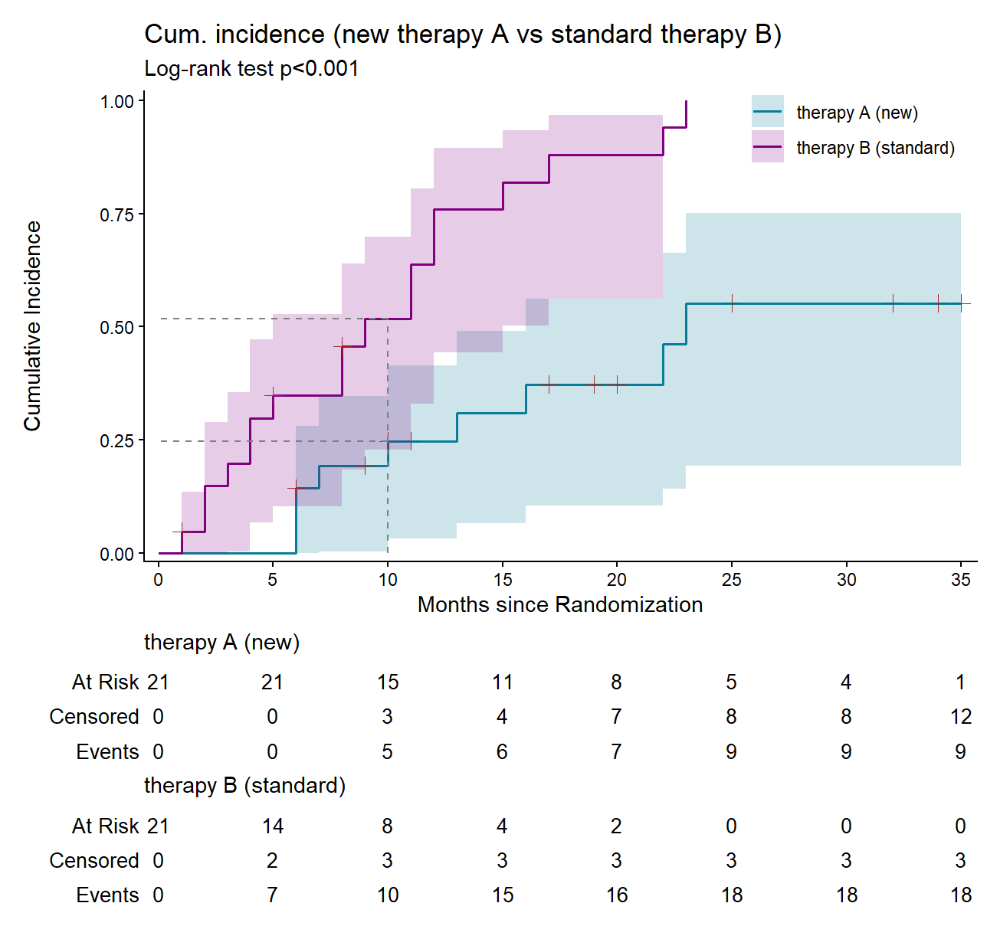
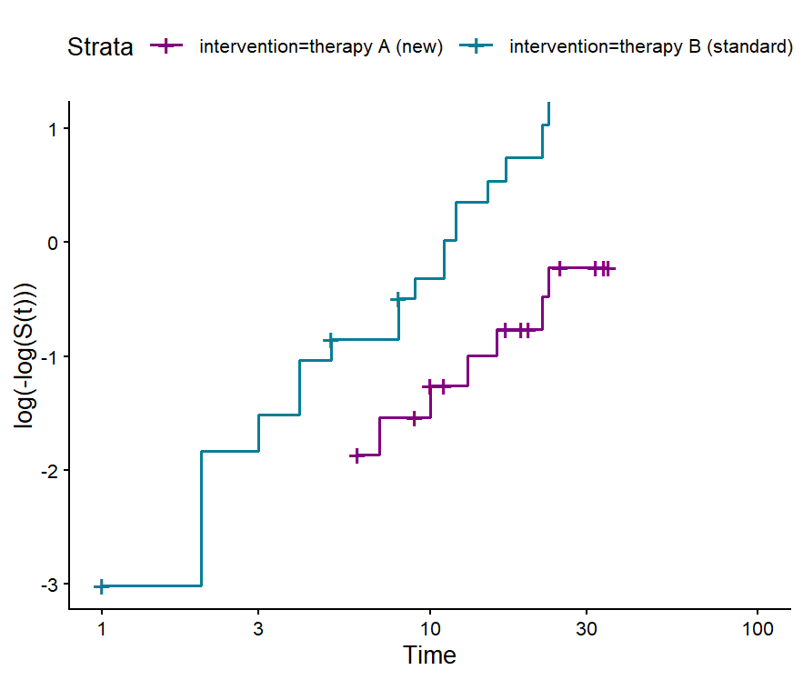
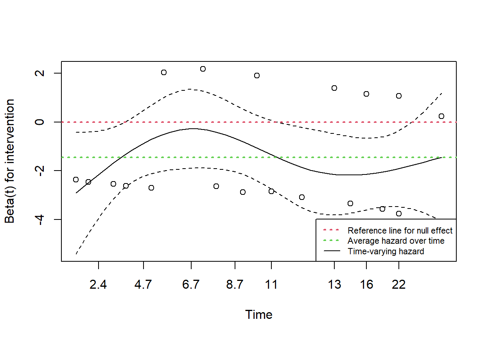

15 Survival Analysis
Survival analysis constitutes a class of statistical methods designed to analyze time-to-event data. In this chapter, we focus on fundamental concepts essential for understanding such data, including censoring, the survival function, and the hazard function. By comparing Kaplan-Meier curves, which visually depict survival probabilities over time, and applying statistical tests such as the log-rank test, we evaluate differences in survival times between treatment groups.
15.1 Introduction to Survival Analysis
15.1.1 Key Characteristics of Survival Data
In field of health sciences, we frequently encounter data that represent the time until an event occurs. Therefore, in survival analysis, we are not only interested in whether a patient experiences the outcome of interest but also in how long it takes for that outcome to occur—referred to as time-to-event. In a clinical trial setting, the primary outcome may be the time from onset of therapy to a well-defined critical event, such as death from cardiovascular disease, cancer recurrence, or the first occurrence of a specific adverse event. One of the challenges associated with survival data is the presence of censored data, where the survival times remain unknown for some patients due to various reasons, including:
- Lost to follow-up during the study period.
- Withdrawal from the study due to unspecified reasons.
- The event not occurring by the end of the study.
These data are commonly referred to as right-censored because, on a timeline, the actual lifetimes of the patients extend beyond their observed censor times.
Statistical techniques have been developed for survival data to account for censored observations. In survival analysis, it is typically assumed that censoring is non-informative, meaning the reason for censoring is unrelated to the outcome being studied (e.g., a patient in a clinical trial might move away from the research center). In this case, the censored patients are assumed to be no different from those who are followed, implying they are not more likely to experience the event.
It is important to note that in clinical trials, differences in censoring between control and experimental groups may introduce systematic bias at various study time points, potentially influencing the study’s conclusions (Templeton et al. 2015; Lesan, Olivier, and Prasad 2024).
15.1.2 Basic Functions of Survival Analysis
15.1.2.1 Survival Function
Let \(T\) be a non-negative random variable, representing the time until the event of interest (e.g., death, disease recurrence). The survival function, denoted as \(S(t)\), also known as cumulative survival probability (often with the term “cumulative” omitted), is defined as the probability that \(T\) is greater than \(t\):
\[ S(t) = P(T > t) \tag{15.1}\]
When the event is death, the survival function estimates the probability that a patient survives beyond time \(t\).
Additionally, the cumulative distribution function, \(F(t) =P(T \leq t ) = 1 - S(t)\), represents the probability of the event occurs at or before time \(t\).
15.1.2.2 Hazard Function
The hazard is the instantaneous risk at a given time \(t\) of experiencing the outcome of interest. The way the hazard changes over time is referred to as the hazard function or hazard rate, denoted as \(h(t)\).
Mathematically, the hazard function \(h(t)\) is defined as the limit of the probability that an event occurs in the interval \([t, t + \Delta t)\), given that the individual has survived up to time \(t\), divided by the length of the interval \(\Delta t\), as \(\Delta t\) approaches zero:
\[ h(t) = \lim_{\Delta t \to 0} \frac{P(t \le T < t + \Delta t \mid T \ge t)}{\Delta t} \tag{15.2}\]
It can be proven that the hazard function is equal to the negative derivative of the natural logarithm of the survival function:
\[ h(t) = - \frac{d[lnS(t)]}{dt} \tag{15.3}\]
If both sides of Eq. 15.3 are integrated, we obtain the cumulative hazard function, denoted as \(H(t)\), as the negative natural logarithm of the survival function:
\[ H(t) = -\ln(S(t)) \tag{15.4}\]
Additionally, the survival function can be expressed as the exponential of the negative cumulative hazard function:
\[ S(t) = e^{-H(t)} \tag{15.5}\]
15.2 Research Question
In a randomized controlled trial designed to find out the efficacy of a new therapy for leukemia, the patients were randomly assigned into two groups (new therapy versus standard therapy). The researchers want to (i) estimate the survival time of patients receiving the new therapy, and (ii) compare the survival curves of the patients receiving the new therapy and patients receiving the standard therapy.
In a clinical trial setting, the patients are monitored for the occurrence of a particular event or outcome. Survival times are typically not normally distributed and often follow skewed distributions, requiring specialized statistical methods for analysis. One approach to estimate the the survival over time is the Kaplan-Meier procedure, which is a non-parametric method, meaning it doesn’t rely on assumptions about the underlying distribution of the data.
15.3 Preparing the Data
In preparing Kaplan-Meier survival analysis that compares different treatments, three variables should be recorded for each patient: (a) the time that is the duration between the beginning of the treatment and the end-point (event of interest or censoring), (b) the status at the end of the survival time (event occurrence or censored data), and (c) the study group such as treatment versus control intervention.
We will begin by loading a small data set named “leukemia”.
dat <- read_excel(here("data", "leukemia.xlsx"))
head(dat)# A tibble: 6 × 3
time status intervention
<dbl> <dbl> <chr>
1 20 0 therapy A (new)
2 6 0 therapy A (new)
3 9 0 therapy A (new)
4 34 0 therapy A (new)
5 23 1 therapy B (standard)
6 5 1 therapy B (standard)The dataset has 42 observations (rows) and includes three variables (columns).
- time: the survival or censoring time in months since randomization
- status: indicator whether or not the patient died (1 indicates death and 0 indicates right censored observation)
- intervention: randomly assigned therapy group with two levels, therapy A (new) or therapy B (standard).
We inspect the data and the type of variables:
glimpse(dat)Rows: 42
Columns: 3
$ time <dbl> 20, 6, 9, 34, 23, 5, 10, 4, 17, 15, 17, 8, 16, 6, 32, 4, 10, 1…
$ status <dbl> 0, 0, 0, 0, 1, 1, 0, 1, 0, 1, 1, 0, 1, 1, 0, 1, 1, 1, 1, 1, 0,…
$ intervention <chr> "therapy A (new)", "therapy A (new)", "therapy A (new)", "ther…
Furthermore, the frequency table of the intervention variable shows that it contains 21 patients receiving the new therapy and 21 receiving the standard therapy.
table(dat$intervention)
therapy A (new) therapy B (standard)
21 21 Similarly, the frequency distribution of the status variable reveals that there are 15 censored data and 27 deaths.
table(dat$status)
0 1
15 27
Now, let’s focus on the subset of patients who underwent treatment A:
dat_A <- dat |>
filter(intervention == "therapy A (new)")Figure 15.1 presents patient times from this subset, where each patient is shown as starting at time zero. We observe 9 X’s representing deaths and 12 open circles indicating censoring events.
The survival package has a construct called a Surv() object-a function that converts the data to a specialized format capable of handling censored observations. We need to specify two arguments in this function, time and status of the patients. The resulting survival object combines information from these two variables. Hence, we obtain the following patient times (in months) for patients undergoing the new therapy A:
Surv(dat_A$time, dat_A$status) [1] 20+ 6+ 9+ 34+ 10+ 17+ 16 6 32+ 10 7 6 35+ 32+ 13 22 19+ 6 23 11+
[21] 25+
We can also sort the survival data:
[1] 6 6 6 6+ 7 9+ 10 10+ 11+ 13 16 17+ 19+ 20+ 22 23 25+ 32+ 32+ 34+
[21] 35+Censoring times are indicated by the \(\textbf{+}\) symbol. For instance, in the above data, patients receiving the new therapy were censored at months: 6+, 9+, 10+, 11+, 17+, 19+, 20+, 25+, 32+, 32+, 34+, 35+.
15.4 The Kaplan–Meier Estimator of the Survival Function
Kaplan–Meier estimator, also known as Product–Limit estimator, is typically used to estimate the survival function. Suppose that the events (deaths) are observed during the follow-up period at \(k\) distinct times, \(t_{1} < t_{2} < t_{3} < \ ...\ < t_{k}\). The conditional probability of surviving is defined as the probability of surviving beyond time \(t_j\), given that the patient has survived up to time \(t_j\). This conditional probability represents the proportion of patients who are at risk at time \(t_j\) but who do not die at this time point, as follows:
\[ P(survive \ beyond \ {t_j} \ | \ sarvived \ up \ to \ {t_j})=1-\frac{d_j}{r_j}, \ \ \ \ for \ j=1,2,..,k. \tag{15.6}\]
where
- \(t_j\) is the time when at least one event (i.e., death) happened
- \(r_j\) is the number of individuals at risk of dying just before the time \(t_j\)
- \(d_j\) the number of events (i.e., deaths) that happened at time \(t_j\).
The Kaplan–Meier estimator (Kaplan and Meier 1958) is defined as the product of the conditional probabilities of surviving beyond time \(t_j\):
\[ \hat S(t) = P(T>t) = \prod_{j:t_j≤t}(1-\frac{d_{j}}{r_{j}}) \tag{15.7}\]
with the convention that \(\hat S(t) = 1\) for \(t<t_1\).
Therefore, the cumulative probability of surviving beyond \(t_j\) can be unfolded as follows:
\[ \hat S(t_j) = (1-\frac{d_{j}}{r_{j}}) \times \underbrace{(1-\frac{d_{j-1}}{r_{j-1}}) \times \ ... \times\ (1-\frac{d_{2}}{r_{2}}) \times (1-\frac{d_{1}}{r_{1}})}_{\hat S(t_{j-1})} \tag{15.8}\]
where the \(\times\) symbol denotes multiplication.
This implies that:
\[ \hat S(t_j) = (1-\frac{d_{j}}{r_{j}}) \times \hat S(t_{j-1}) \tag{15.9}\]
15.5 Pointwise Confidence Interval of K-M Survial Function
Several different approaches can be used to derive the variance of the K-M estimator and construct pointwise confidence intervals.
15.5.1 Greenwood’s Method
Based on the “delta” method (Hosmer, Lemeshow, and May 2008), we obtain the Greenwood’s formula for the variance of \(\hat{S}(t)\) (Greenwood 1926):
\[ \hat{Var} \big(\hat{S}(t) \big) \cong \big(\hat{S}(t)\big)^2 \sum_{j:t_j≤t} \frac{d_{j}}{r_{j}(r_{j} - d_{j})} \tag{15.10}\]
The estimated standard error of \(\hat S(t)\) is the positive square root of @eq-vargreenwood:
\[ \hat{SE}\big({\hat{S}(t)}\big) = [\hat{Var} \big(\hat{S}(t) \big)]^{1/2} \tag{15.11}\]
The simplest estimation of confidence interval for the survival probability at a given time \(t\) is given by:
\[ \hat{S}(t)\pm 1.96 \cdot SE\big({\hat{S}(t)}\big) \tag{15.12}\]
This approach, however, can lead to confidence intervals outside the valid range (less than zero or greater than one), and assumes normality which might not hold for small samples. To address these problems, log transformation, and complementary log-log transformation have been proposed.
15.5.2 Log Transformation of Survival Function
The approximate variance of \(log\hat{S}(t)\) is:
\[ \hat{Var} \big(log\hat{S}(t) \big) \cong \sum_{j:t_j≤t} \frac{d_{j}}{r_{j}(r_{j} - d_{j})} \tag{15.13}\]
The standard error of the log K-M estimator is approximately equal to \([\hat{Var} \big(log\hat{S}(t) \big)]^{1/2}\). Thus, the endpoints of a 95% confidence interval for the \(log\hat{S}(t)\) are given by the expression:
\[ log\hat{S}(t)\pm 1.96 \cdot \hat{SE}\big(log\hat{S}(t)\big) \tag{15.14}\]
We convert each of these values back to the original scale using the formula:
\[ \hat{S}(t)exp\{ \pm 1.96 \cdot \hat{SE}\big({log\hat{S}(t)}\big)\} \tag{15.15}\]
15.5.3 Log-Log Transformation of Survival Function
The approximate variance of the log-log transformation is:
\[ \hat {Var} \big(log(-log\hat{S}(t)) \big) \cong \frac{1}{\big(log\hat{S}(t)\big)^2} \sum_{j:t_j≤t} \frac{d_{j}}{r_{j}(r_{j} - d_{j})} \tag{15.16}\]
The standard error of the log-log K-M estimator is approximately equal to \([\hat{Var} \big(log(-log\hat{S}(t)) \big)]^{1/2}\).
Now, we can construct a 95% confidence interval for the \(log(-log\hat{S}(t))\), as follows:
\[ log(-log\hat{S}(t))\pm 1.96 \cdot \hat{SE}\big(log(-log\hat{S}(t))\big) \tag{15.17}\]
Finally, we convert the endpoints of the confidence interval back to the original scale using the expression:
\[ \hat S(t)^{exp\{\pm 1.96 \ \cdot \hat{SE}(log(-log\hat{S}(t)))\}} \tag{15.18}\]
15.6 Kaplan-Meier Tables for the New Therapy A
In Kaplan-Meier analysis, the first step typically involves creating tables with the Kaplan-Meier estimates of the survival function.
15.6.1 Kaplan–Meier Table with Both Event Times and Censored Data
An initial table includes both observed event times and censored data points, providing a clear understanding of how the survival probability changes over time. This can be achieved in R using either the survfit() function from the survival package or the survfit2() function from the ggsurvfit package. The latter offers the advantage of generating time-to-event figures using ggplot2 for visualization. Both functions model the survival probability using the formula Surv ~ 1, where 1 indicates the absence of any grouping variable. Let’s apply this to therapy A data.
[1] "n" "time" "n.risk" "n.event" "n.censor"
[6] "surv" "std.err" "cumhaz" "std.chaz" "type"
[11] "logse" "conf.int" "conf.type" "lower" "upper"
[16] "t0" "call" ".Environment"As we can see, the function survfit2() returns a list of items, including the number of participants at risk (n.risk), censored (n.censor), those who experienced the event (n.event), and the cumulative probability of surviving over time (surv) for the new therapy. For example, we can access the K-M estimates by selecting the list item surv as follows:
fit_A$surv [1] 0.8571429 0.8067227 0.8067227 0.7529412 0.7529412 0.6901961 0.6274510 0.6274510
[9] 0.6274510 0.6274510 0.5378151 0.4481793 0.4481793 0.4481793 0.4481793 0.4481793
We can also use the surv_summary() function from the survminer package, which organizes the information of the fit_A into a data.frame, as opposed to a list of objects.
surv_summary(fit_A, data = dat_A) |>
select(1:5) time n.risk n.event n.censor surv
1 6 21 3 1 0.8571429
2 7 17 1 0 0.8067227
3 9 16 0 1 0.8067227
4 10 15 1 1 0.7529412
5 11 13 0 1 0.7529412
6 13 12 1 0 0.6901961
7 16 11 1 0 0.6274510
8 17 10 0 1 0.6274510
9 19 9 0 1 0.6274510
10 20 8 0 1 0.6274510
11 22 7 1 0 0.5378151
12 23 6 1 0 0.4481793
13 25 5 0 1 0.4481793
14 32 4 0 2 0.4481793
15 34 2 0 1 0.4481793
16 35 1 0 1 0.4481793However, the above functions do not compute the conditional probability of survival over time. Therefore, we will calculate it in R using the Eq. 15.6:
# compute the conditional probability of "surviving" over time
prob_A <- round(1-(fit_A$n.event/fit_A$n.risk), 3)
prob_A [1] 0.857 0.941 1.000 0.933 1.000 0.917 0.909 1.000 1.000 1.000 0.857 0.833 1.000
[14] 1.000 1.000 1.000Now, we are ready to include all the information in the Table 15.1:
| Ordered Times (months) | No. at Risk | No. of Deaths | No. of Censored | Conditional Probability of Surviving, \(\hat{P}(t)\) | Cumulative Probability of Surviving, \(\hat{S}(t)\) |
|---|---|---|---|---|---|
| 0 | 21 | 0 | 0 | 1.000 | 1.000 |
| 6 | 21 | 3 | 1 | 0.857 | 0.857 |
| 7 | 17 | 1 | 0 | 0.941 | 0.807 |
| 9 | 16 | 0 | 1 | 1.000 | 0.807 |
| 10 | 15 | 1 | 1 | 0.933 | 0.753 |
| 11 | 13 | 0 | 1 | 1.000 | 0.753 |
| 13 | 12 | 1 | 0 | 0.917 | 0.690 |
| 16 | 11 | 1 | 0 | 0.909 | 0.627 |
| 17 | 10 | 0 | 1 | 1.000 | 0.627 |
| 19 | 9 | 0 | 1 | 1.000 | 0.627 |
| 20 | 8 | 0 | 1 | 1.000 | 0.627 |
| 22 | 7 | 1 | 0 | 0.857 | 0.538 |
| 23 | 6 | 1 | 0 | 0.833 | 0.448 |
| 25 | 5 | 0 | 1 | 1.000 | 0.448 |
| 32 | 4 | 0 | 2 | 1.000 | 0.448 |
| 34 | 2 | 0 | 1 | 1.000 | 0.448 |
| 35 | 1 | 0 | 1 | 1.000 | 0.448 |
Note that we start the table with \(time=0\) and \(\hat S(t) = 1\), where everyone is at risk (no events or censoring yet). Furthermore, when there are only censored observations at a particular time such as at month 9, the conditional probability \(\hat P(t)\) of surviving equals 1 and the cumulative probability \(\hat S(t)\) does not changed, \(\hat S(9) = \hat S(7) = 0.807\). However, we observe that at the next time \(t = 10\) months, the number of patients at risk is reduced by the number of censored data at t = 9 months (\(n.risk = 16 - 1 = 15\)). The conditional probability for this time point equals \(\hat P(10) = 1-(1/15) = 1-0.067 = 0.933\) because one patient died. Thus, the cumulative probability of surviving beyond 10 months becomes \(\hat S(10) = \hat P(10) \times \hat S(9) = 0.933 \times 0.807 = 0.753\).
IMPORTANT
Only events cause the survival probability to drop. Censoring leads to a larger drop for the next event because it reduces the number of patients at risk when that next event occurs.
15.6.2 Kaplan–Meier Table of Event Times
In Kaplan-Meier approach, the cumulative survival probability is calculated at each event time \(t_j\) and represents the proportion of patients who have managed to survive beyond that point in time. The Table 15.2 presents, at each time \(t_j\) when an event occurred, the total number of patients at risk (\(r_j\)) just before the \(t_j\), the number of events at that time (\(d_j\)), the conditional probability, and the cumulative probability of survival. It also includes the standard error (according to Eq. 15.11; the default of survival package) and 95% confidence interval of the survival point estimate (lower 95% CI, upper 95% CI; according to Eq. 15.15; the default of survival package).
| Event time (months), \(t_j\) | No. at risk, \(r_j\) | No. of deaths, \(d_j\) | Cond. prob. of surviving, \(\hat{P}(t_j)\) | Cum. prob. of surviving, \(\hat{S}(t_j)\) | St. Error of \(\hat{S}(t_j)\) | Lower 95% CI | Upper 95% CI |
|---|---|---|---|---|---|---|---|
| 6 | 21 | 3 | 0.857 | 0.857 | 0.076 | 0.720 | 1.000 |
| 7 | 17 | 1 | 0.941 | 0.807 | 0.087 | 0.653 | 0.996 |
| 10 | 15 | 1 | 0.933 | 0.753 | 0.096 | 0.586 | 0.968 |
| 13 | 12 | 1 | 0.917 | 0.690 | 0.107 | 0.510 | 0.935 |
| 16 | 11 | 1 | 0.909 | 0.627 | 0.114 | 0.439 | 0.896 |
| 22 | 7 | 1 | 0.857 | 0.538 | 0.128 | 0.337 | 0.858 |
| 23 | 6 | 1 | 0.833 | 0.448 | 0.135 | 0.249 | 0.807 |
Worth noting in the above table, the standard error of the survival probability estimate increases with time. This is because fewer individuals remain at risk for the event as the study progresses.
The summary() function applied to the fit_A object provides the K-M estimates for each observed event time \(t_j\), as shown in TABLE @ref(tab:tb2).
summary(fit_A)Moreover, we can add in summary() an optional argument called times to specify certain times at which we want to see the survival details. For instance, we can get survival estimates every 5 months from 0 to 35 months.
Call: survfit(formula = Surv(time, status) ~ 1, data = dat_A)
time n.risk n.event survival std.err lower 95% CI upper 95% CI
0 21 0 1.000 0.0000 1.000 1.000
5 21 0 1.000 0.0000 1.000 1.000
10 15 5 0.753 0.0963 0.586 0.968
15 11 1 0.690 0.1068 0.510 0.935
20 8 1 0.627 0.1141 0.439 0.896
25 5 2 0.448 0.1346 0.249 0.807
30 4 0 0.448 0.1346 0.249 0.807
35 1 0 0.448 0.1346 0.249 0.807Finally, if we wish to obtain the end points of confident interval according to Eq. 15.18, we specify the conf.type = "log-log" in the survfit2(), as follows:
Call: survfit(formula = Surv(time, status) ~ 1, data = dat_A, conf.type = "log-log")
time n.risk n.event survival std.err lower 95% CI upper 95% CI
6 21 3 0.857 0.0764 0.620 0.952
7 17 1 0.807 0.0869 0.563 0.923
10 15 1 0.753 0.0963 0.503 0.889
13 12 1 0.690 0.1068 0.432 0.849
16 11 1 0.627 0.1141 0.368 0.805
22 7 1 0.538 0.1282 0.268 0.747
23 6 1 0.448 0.1346 0.188 0.68015.7 The Kaplan–Meier Curve for the New Therapy A
Kaplan–Meier analysis is typically presented as a survival curve in addition to tabular form. The K-M curve of the estimated cumulative probability of survival, along with the 95% confidence interval (lower 95% CI, upper 95% CI), is depicted in Figure 15.2. The time post randomization in months is represented on the x-axis, and the cumulative survival probability is plotted on the y-axis.
fit_A |>
ggsurvfit(linewidth = 0.6, color = "#077E97" ) +
add_confidence_interval(fill = "#077E97") +
add_censor_mark(color = "brown", size = 2.5) +
add_risktable(risktable_stats = c("n.risk", "cum.censor", "cum.event")) +
add_quantile(y_value = 0.5, color = "gray50", linewidth = 0.5) +
geom_segment(aes(x = 16, y = 0, xend = 16, yend = 0.5),
linetype = "dashed", color = "red", linewidth = 0.5) +
scale_x_continuous(expand = c(0.015, 0, 0.02, 0),
limits = c(0, 35), breaks = seq(0, 35, 5)) +
scale_y_continuous(expand = c(0.018, 0, 0.05, 0)) + theme_classic() +
labs(title = "K-M curve for the new therapy A",
x = "Months since Randomization", y = "Survival Probability")
The K-M curve is a stepped line, rather than a smooth curve, as it remains horizontal when there are no events and drops only at times when at least one death occurs. With a small sample the 95% confidence interval of the \(S(t)\) is wide (shaded light blue area). Furthermore, we observe in Figure 15.2 that as the number of individuals at risk decreases over time, the uncertainty of the Kaplan-Meier estimate increases, resulting in wider confidence intervals at later times.
Beyond the standard Kaplan-Meier curve, we can enhance the visualization of survival data by incorporating additional information (Morris et al. 2019; Rosen, Prasad, and Chen 2020). At the bottom of the graph, a table presents the number of participants at risk, the cumulative number of censored observations, and the cumulative number of patients who have experienced an event at specific time points (0, 5, 10, 15, 20, 25, 30 and 35 months).
We can also find the median survival time—the time point at which half of the patients have survived—graphically. Starting from the mid-point of the survival axis (y = 0.50) in Figure 15.2, we move horizontally until the curve is crossed, then drop vertically to the time axis (x-axis) to find the corresponding time (gray dashed line). In our example, the median survival time for patients receiving the new therapy A is around 23 months. To confirm this result, we simply call the fit_A survival object that we previously created.
fit_ACall: survfit(formula = Surv(time, status) ~ 1, data = dat_A)
n events median 0.95LCL 0.95UCL
[1,] 21 9 23 16 NAThe lower endpoint of the 95% confidence interval for the median survival time is 16 months (red dashed line), whereas the upper endpoint is undefined (NA). This becomes clear when examining the Figure 15.2, where the upper limit of the 95% confidence interval is always above the gray, dashed horizontal line.
Key points regarding Kaplan-Meier survival curve
At the beginning of the study (time=0), we typically assume all participants are alive and haven’t experienced the event of interest. So, the initial probability of survival is S(0) = 1.
The survival curve always decreases or remains constant over time, but never reduces to zero if the largest observation is a censored one.
The Kaplan-Meier estimator is a step function with drops at event times. The size of the drops depends on the number of events and the number of individuals at risk at the corresponding times.
The survival curve is defined only up to the longest observation time. If the curve doesn’t drop to 0.50 or below during the study period, the median survival time cannot be estimated.
15.8 The Median Follow-up Time for the New Therapy
Another important aspect of time-to-event data is the follow-up time of the participants. Reporting a summary measure on how long participants were typically followed is important because the duration of follow-up can significantly impact the interpretation of findings in survival analysis (Korn 1986; Betensky 2015).
Calculating the median follow-up time provides a measure of the length of follow-up of participants in a study. While a simple approach might use the follow-up time of events and censored data, this underestimates the follow-up duration because of early events. Focusing solely on participants with censored data seems like an improvement (Korn 1986), but it can still underestimate the actual follow-up. Schemper and Smith (Schemper and Smith 1996) explored various methodologies and proposed the reverse Kaplan-Meier approach, where censoring and events are reversed. This method offers a straightforward solution and yields a meaningful interpretation of follow-up duration.
Let’s calculate the median follow-up time for the new therapy A group using these methods.
# median follow-up time for the new therapy A
median(dat_A$time)[1] 16# A tibble: 1 × 1
median_censored
<dbl>
1 19.5# reverse KM estimate of the median follow-up for the new therapy A
recoded_dat_A <- dat_A |>
mutate(recoded_status = recode_values(status, 0 ~ 1,
1 ~ 0))
reverse_fit_A <- survfit2(Surv(time, recoded_status) ~ 1,
data = recoded_dat_A)
surv_median(reverse_fit_A) strata median lower upper
1 All 25 17 NA# equivalently, set status == 0 (censored) and compute rev. KM estimate
reverse_fit_A <- survfit2(Surv(time, status == 0) ~ 1, data = dat_A)
surv_median(reverse_fit_A)According to the reverse Kaplan-Meier method, the median follow-up time of participants who received the new therapy A is 25 months. In contrast, the simple and censored median follow-up times are only 16 and 19.5 months, respectively.
We can also obtain the above result using the prolim() function inside the quantile(), and specify the reverse argument as TRUE:
Quantiles of the potential follow up time distribution based on the Kaplan-Meier method
applied to the censored times reversing the roles of event status and censored.
Table of quantiles and corresponding confidence limits:
q quantile lower upper
<num> <num> <num> <num>
1: 0.00 NA NA NA
2: 0.25 32 25 NA
3: 0.50 25 17 32
4: 0.75 17 9 25
5: 1.00 6 6 11
Median with interquartile range (IQR):
Median (IQR)
<char>
1: 25.00 (17.00;32.00)15.9 The Nelson–Aalen Estimator of the Cumulative Hazard Function
In survival analysis, the Nelson–Aalen estimator is often used to estimate the cumulative hazard function \(H(t)\) (Table 15.3), which represents the cumulative risk of experiencing the event of interest up to time \(t\):
\[ \hat H(t) = \sum_{j: t_j \leq t} \frac{d_j}{n_j}, \ \ \ for\ j=1,2,..,k. \tag{15.19}\]
The estimated variance of the Nelson–Aalen estimator is given by:
\[ \hat{Var} \big(\hat{H}(t_j) \big) \cong \sum_{j:t_j≤t} \frac{d_{j}}{r_{j}^2}, \ \ \ for\ j=1,2,..,k. \tag{15.20}\]
The estimated standard error of \(\hat H(t)\) is the positive square root of Eq. 15.20:
\[ \hat{SE}\big({\hat{H}(t)}\big) = [\hat{Var} \big(\hat{H}(t) \big)]^{1/2} \tag{15.21}\]
The estimation of 95% confidence interval for the cumulative hazard function at a given time \(t\) is given by:
\[ \hat{H}(t)\pm 1.96 \cdot \hat{SE}\big({\hat{H}(t)}\big) \tag{15.22}\]
| Event time, \(t_j\) | No. at risk, \(r_j\) | No. of deaths, \(d_j\) | Cond. prob. of surviving, \(\hat{P}(t_j)\) | Hazard function, \(\hat{h}(t_j)\) | Cum. prob. of hazard, \(\hat{H}(t_j)\) | St. Error of \(\hat{H}(t_j)\) | Lower 95% CI | Upper 95% CI |
|---|---|---|---|---|---|---|---|---|
| 6 | 21 | 3 | 0.857 | 0.1429 | 0.1429 | 0.0825 | 0.000 | 0.305 |
| 7 | 17 | 1 | 0.941 | 0.0588 | 0.2017 | 0.1013 | 0.003 | 0.400 |
| 10 | 15 | 1 | 0.933 | 0.0667 | 0.2683 | 0.1213 | 0.031 | 0.506 |
| 13 | 12 | 1 | 0.917 | 0.0833 | 0.3517 | 0.1471 | 0.063 | 0.640 |
| 16 | 11 | 1 | 0.909 | 0.0909 | 0.4426 | 0.1730 | 0.104 | 0.782 |
| 22 | 7 | 1 | 0.857 | 0.1429 | 0.5854 | 0.2243 | 0.146 | 1.025 |
| 23 | 6 | 1 | 0.833 | 0.1667 | 0.7521 | 0.2795 | 0.204 | 1.300 |
It is important to note that the ggsurvfit() function produces a cumulative hazard function plot based on the Product–Limit estimator, \(\hat H(t) = -log\hat S(t)\) (blue solid line), which approximates the estimates from the Nelson–Aalen estimator (black dashed line), as shown in Figure 15.3 for the new therapy A.
# extract Nelson–Aalen estimates manually
na_haz <- data.frame(time = fit_A$time,
cumhaz2 = cumsum(fit_A$n.event/fit_A$n.risk))
# cumulative hazard plot
fit_A |> ggsurvfit(type = "cumhaz", linewidth=0.6, color="#077E97") +
geom_step(data = na_haz, aes(x = time, y = cumhaz2),
linetype = "dashed") +
add_confidence_interval(fill = "#077E97") +
add_censor_mark(color = "brown", size = 2.5) +
add_risktable(risktable_stats=c("n.risk","cum.censor","cum.event")) +
scale_x_continuous(expand = c(0.018, 0, 0.02, 0),
limits = c(0, 35), breaks = seq(0, 35, 5)) +
scale_y_continuous(expand = c(0.018, 0, 0.05, 0),
breaks = seq(0, 1.5, 0.25)) +
labs(title = "Cum. hazard function for the new therapy A",
x = "Months since Randomization", y="Cumulative hazard function") +
theme_classic()
15.10 Comparing Groups in Survival Analysis
15.10.1 K-M Survival Probability Curves
The survival of two or more groups of patients can be compared graphically. In our example, we are interested in comparing the survival curves between the new therapy and the standard therapy. First, in the survfit2() function, we need to replace \(\sim 1\) in the model formula with the intervention variable (i.e Surv \(\sim\) intervention) and include all the patients in the survival analysis using data = dat. Then, we use the ggsurvfit() function to dispaly a Kaplan-Meier curve for each therapy, as shown in Figure 15.4:
fit_AB <- survfit2(Surv(time, status) ~ intervention, data = dat)
fit_AB |> ggsurvfit(linewidth = 0.6) +
add_confidence_interval() +
add_censor_mark(color = "brown", size = 2.5) +
add_risktable(risktable_stats=c("n.risk","cum.censor","cum.event")) +
add_quantile(y_value = 0.5, color = "gray50", linewidth = 0.5) +
scale_x_continuous(expand = c(0.018, 0, 0.02, 0), limits=c(0, 35),
breaks = seq(0, 35, 5)) +
scale_y_continuous(expand = c(0.018, 0, 0.05, 0)) +
scale_color_manual(values = c("#077E97", "#800080")) +
scale_fill_manual(values = c("#077E97", "#800080")) +
labs(title = "K-M curves (new therapy A vs standard therapy B)",
subtitle = glue::glue("Log-rank test {survfit2_p(fit_AB)}"),
x = "Months since Randomization", y="Survival Probability") +
theme_classic() + theme(legend.position = c(0.85, 0.92)) 
K-M plot reveals that patients receiving the new therapy have higher probability of surviving through the whole time period. Particularly, the median survival time for each group can be estimated calling the object fit_AB:
# call the fit_AB object to find median survival time
fit_ABCall: survfit(formula = Surv(time, status) ~ intervention, data = dat)
n events median 0.95LCL 0.95UCL
intervention=therapy A (new) 21 9 23 16 NA
intervention=therapy B (standard) 21 18 9 5 15The median survival of patients in the new therapy (23 months) is higher than in standard therapy (9 months).
It is important to note that we cannot assess the significance of survival differences between the two groups by simply examining the overlap of individual 95% confidence intervals in Figure 15.4. It is necessary to calculate the 95% confidence interval of their survival differences.
With the survplotp() function from the rms package, we can create an interactive Plotly visualization (Figure 15.5) with a gray shaded area corresponding to a half-width confidence band (i.e., the midpoint of the survival estimates of the two groups ± the half-width of the 95% confidence interval for the difference in each group’s Kaplan-Meier probability estimates). Where the survival curves intersect this band, it indicates that there is no significant difference (Msaouel 2024).
15.10.2 Cumulative Incidence
Sometimes, it is useful to plot the “cumulative incidence”, also known as “cumulative events”. This can be achieved by setting the argument type to “risk” in the ggsurvfit() function.
fit_AB |>
ggsurvfit(type = "risk", linewidth = 0.6) +
add_confidence_interval() +
add_censor_mark(color = "brown", size = 2.5) +
add_risktable(risktable_stats=c("n.risk","cum.censor","cum.event")) +
add_quantile(x_value = 10, color = "gray50", linewidth = 0.5) +
scale_x_continuous(expand = c(0.018, 0, 0.02, 0), limits = c(0, 35),
breaks = seq(0, 35, 5)) +
scale_y_continuous(expand = c(0, 0.018, 0.02, 0)) +
scale_color_manual(values = c("#077E97", "#800080")) +
scale_fill_manual(values = c("#077E97", "#800080")) +
labs(title = "Cum. incidence (new therapy A vs standard therapy B)",
subtitle = glue::glue("Log-rank test {survfit2_p(fit_AB)}"),
x = "Months since Randomization", y = "Cumulative Incidence") +
theme_classic() + theme(legend.position = c(0.85, 0.92)) 
In standard survival analysis (without competing risks), the formula \(F(t) = 1 - S(t)\) can be used to estimate the probability of a participant experiencing the event (death) by a specific time point (Clark et al. 2003). As shown in Figure 15.6, at 10 months, this probability is approximately 0.25 for patients receiving the new therapy A and around 0.52 for those on the standard therapy B. Note that the curve for the standard therapy starts at 0 and increases to a maximum of 1.
15.10.3 The Log-Rank Test
Comparing survival curves involves using statistical tests to determine if there are significant differences in survival times between two or more independent groups. One common method is the log-rank test which compares survival curves among groups across the entire duration of the study (Mantel and Haenszel 1959; Peto and Peto 1972). It is considered a non-parametric approach because it does not require the survival times to follow any particular statistical distribution. It is important to note that Harrington and Fleming (Harrington and Fleming 1982) proposed a family of tests that are similar to the log-rank test, providing alternative methods for comparing survival curves.
Null hypothesis and alternative hypothesis of log-rank test
- Ho: There is no overall difference between the survival curves of the two groups.
- H1: There is an overall difference between the two survival curves.
15.10.3.1 The Log-Rank Statistic
The log-rank test compares the observed number of deaths (O) with the expected number of deaths (E) at all distinct event times, \(t_{1} < t_{2} < t_{3} < \ ...\ < t_{k}\). Under the null hypothesis, the log-rank statistic for the two-group case is calculated for one of the two groups as follows (Mantel 1963):
\[ Z_{log-rank}^2 = \frac{\Bigl(\sum_{j=1}^k (O_{j}-E_{j})\Bigr)^2}{\sum_{j=1}^k V_{j}} \tag{15.23}\]
where \(V_j\) represents the estimated variance of the difference between observed and expected events at each event time. This statistics follows an approximately chi-square distribution with 1 degree of freedom (\(Z_{log-rank}^2 \sim \chi_1^2\)) under the null hypothesis. It is important to note that the results are the same regardless of which group is used in the Eq. 15.23.
In R:
The survdiff() function is used to compare survival curves between two or more groups. The optional parameter rho allows for weighting of event times. When rho = 0 (default), it executes the log-rank test, while rho = 1 corresponds to the Peto & Peto (Peto and Peto 1972) modification of the Gehan-Wilcoxon test (Gehan 1965), which is more sensitive to early differences in survival times.
Call:
survdiff(formula = Surv(time, status) ~ intervention, data = dat,
rho = 0)
N Observed Expected (O-E)^2/E (O-E)^2/V
intervention=therapy A (new) 21 9 17.65 4.24 13.3
intervention=therapy B (standard) 21 18 9.35 8.00 13.3
Chisq= 13.3 on 1 degrees of freedom, p= 3e-04 The \((O-E)^2/V\) column corresponds to the value of log-rank test statistic, which in this case is 13.3. This value is equivalent to a chi-square value, as it is based on a similar statistical framework. The resulting p-value is 0.0003 <0.05. Therefore, we reject the null hypothesis (\(H_o\)) and conclude that the survival curves are significantly different.
IMPORTANT
The power of the log-rank test is heavily influenced by the number of events. Consequently, ensuring a sufficient number of observed events is essential for achieving adequate power in survival studies.
15.10.4 The Hazard Ratio (HR)
The hazard ratio (HR) is an estimate of the ratio of the hazard rate in the new therapy versus the standard therapy. It is often interpreted as a risk ratio or odds ratio, although they are not technically the same.
IMPORTANT
The calculation of Hazard ratio (HR) differs from relative risks (RR) and odds ratio (OR) in that RR and OR are cumulative over an entire study, using a defined endpoint, while HRs represent instantaneous risk over the study time period.
After computing the number of observed events (deaths) in each group (\(O_A\) for observed number of events in group A and \(O_B\) for observed number of events in group B), and the expected number of events assuming a null hypothesis of no difference in survival (\(E_A\) for expected number of events in group A and \(E_B\) for expected number of events in group B) using the log-rank approach, we can calculate the hazard ratio:
\[ Hazard \ Ratio = HR = \frac{\frac{O_A}{E_A}}{\frac{O_B}{E_B}} = \frac{\frac{9}{17.65}}{\frac{18}{9.35}} =\frac{0.51}{1.94} = 0.26\]
We can also compute the 95% confidence interval for the HR. First, we compute the standard error of the natural logarithm of the hazard ratio:
\[SE_{lnHR} = \sqrt{\frac{1}{E_A} + \frac{1}{E_B}} = \sqrt{\frac{1}{17.65} + \frac{1}{9.35}} = \sqrt{0.057 + 0.107} = \sqrt{0.164} = 0.404\]
Second, we calculate the 95% CI of the natural logarithm of the hazard ratio. The lower limit is:
\[LL_{lnHR} = lnHR - 1.96 \cdot SE_{lnHR} = ln(0.26) - 1.96 \cdot 0.404 = - 1.33 - 0.79 = - 2.12\]
and the upper limit is:
\[UL_{lnHR} = lnHR + 1.96 \cdot SE_{lnHR} = ln(0.26) + 1.96 \cdot 0.404 = - 1.33 + 0.79 = - 0.54\]
Finally, we convert each of these values back to HR scale:
\[LL_{HR} = exp(LL_{lnHR}) = exp(- 2.12) = 0.12\] and
\[UL_{HR} = exp(UL_{lnHR}) = exp(-0.54) = 0.58\]
The hazard ratio is interpreted similarly to the risk or odds ratio. Values above one indicate an increased hazard, values below one indicate a decreased hazard, and values equal to one suggest no change in the hazard. Thus, in our example, the hazard of dying is 74% lower (1 - 0.26 = 0.74) with the new treatment compared to the standard treatment (HR=0.26; 95% CI: 0.12, 0.58). Note that the 95% CI of the hazard ratio does not include 1.
In R:
The hazard ratio, HR, is:
O_A <- SurvDiff$obs[1]
O_B <- SurvDiff$obs[2]
E_A <- SurvDiff$exp[1]
E_B <- SurvDiff$exp[2]
HR <- (O_A/E_A)/(O_B/E_B)
HR[1] 0.2649746The standard error of the logarithm of HR is:
SE_lnHR = sqrt(1/E_A + 1/E_B)
SE_lnHR[1] 0.4044623The lower and upper limits of the logarithm of HR are:
LL_lnHR <- log(HR) - 1.96*SE_lnHR
LL_lnHR[1] -2.120867UL_lnHR <- log(HR) + 1.96*SE_lnHR
UL_lnHR[1] -0.5353751Finally, we convert the limits back into the original hazard ratio scale:
15.10.5 Τhe Proportionality of Hazards
In our previous analysis, we calculated the ratio of the hazard function in group A to that in the group B as \(HR=0.26\). This implies that we assumed the hazard ratio remains constant across all time points (it does not depend on the time), known as proportionality of hazards:
\[ HR = \frac{h_A(t)}{h_B(t)} = constant \tag{15.24}\]
Another way to express proportionality of hazards mathematically is to state that the hazard function for an individual in group A is \(c\) times the hazard function for an individual in group B:
\[ h_A(t) = c \cdot h_B(t) \tag{15.25}\]
where \(c\) is a constant number.
In our example, according to Eq. 15.25, if therapy A has 0.26 times the risk of a fatal event compared to therapy B at 5 months, this relative risk remains 0.26 at 15 months and at any other time point.
We can assess whether the ratio of hazards between groups remains constant over time using graphical methods and statistical tests. First, we observe whether the curves in Figure 15.4 intersect. In our example, they do not. However, if they were to intersect, it would suggest that the effect of one group on survival relative to the other changes over time. For instance, therapy A might initially have a higher survival probability than therapy B, but later, therapy B could overtake therapy A. This would indicate a violation of the constant hazard ratio.
Second, we can assess the proportionality of hazards by plotting the log-log Kaplan–Meier survival estimates (log(-log(S(t)))) on the y-axis against the logarithmic scale of time on the x-axis (Figure 15.7)). By examining whether the curves are approximately parallel, we can determine if the assumption holds.
# Plot log-log survival curves
ggsurvplot(fit_AB, fun = "cloglog", size = 0.7,
palette = c("#800080", "#077E97"),
ggtheme = theme_classic(base_size = 10))
We observe that the proportionality of hazards holds in our case, as the two curves are parallel.
INFO
The log-rank test achieves optimal power when proportionality of hazards holds and there is homogeneity of survival distributions within each group (Statistical Thinking by Frank Harrell).
15.10.6 Reporting the Results
The median follow-up time of the study, which represents the point at which 50% of patients have been observed for at least that duration, is calculated as follows:
Quantiles of the potential follow up time distribution based on the Kaplan-Meier method
applied to the censored times reversing the roles of event status and censored.
Table of quantiles and corresponding confidence limits:
q quantile lower upper
<num> <num> <num> <num>
1: 0.00 NA NA NA
2: 0.25 32 25 NA
3: 0.50 25 19 32
4: 0.75 17 9 25
5: 1.00 1 1 8
Median with interquartile range (IQR):
Median (IQR)
<char>
1: 25.00 (17.00;32.00)
REPORT
A total of 21 patients were assigned to the new therapy and 21 to the standard therapy. The median follow-up time was 25 months (IQR: 17 to 32). The median survival of patients in the new therapy (23 months) was longer than in standard therapy (9 months). The hazard of dying was \(74\%\) lower with the new treatment compared to the standard treatment \((HR = 0.26; 95\% \ CI: 0.12 \ to \ 0.58; \ p < 0.001)\).
15.11 Cox Proportional Hazards (CPH) Model
15.11.1 Basics of the CPH Model
Under the proportionality assumption, we can model the survival analysis using the Cox proportional hazards model, defined as follows:
\[ h(t) = h_o(t) \cdot e^{\beta \cdot x} \ \ \ for \ \ \ every \ \ \ t \geq 0 \tag{15.26}\]
where \(h_o(t)\) is the baseline hazard which is a function of \(t\) and can take any form, and \(X\) is time-independent.
Equivalently, this can be written in log scale as:
\[ ln \ h(t) = ln \ h_o(t) + \beta \cdot x \tag{15.27}\]
INFO
According to Eq. 15.27, the Cox proportional hazards model is considered a semi-parametric model because it includes both parametric and nonparametric components.
The parametric component is represented by the term \(\beta \cdot x\), which is modeled through linear regression on the log-hazard. For every 1-unit increase in \(x\), the log hazard changes on average by \(\beta\) (for every time \(t\) in the follow-up period).
The nonparametric component is the baseline hazard \(h_o(t)\) on log scale, which is an unspecified function.
Let X be a binary random variable of therapy type, where:
\[ X={\begin{cases}1,& for\ therapy \ A\\0,&for\ therapy \ B \ (ref.)\end{cases}} \tag{15.28}\]
Applying the Eq. 15.26, the hazard ratio between two individuals receiving therapy A and therapy B is:
\[ HR = \frac{h_A(t)}{h_B(t)} = \frac{h_o(t) \cdot e^{\beta \cdot 1}}{h_o(t)\cdot e^{\beta \cdot 0}} = e^{\beta} \tag{15.29}\]
The ratio is independent of time, i.e. proportional hazards over time. It is important to note that we have chosen the standard therapy B as the reference group, which is used in the denominator when calculating the hazard ratio.
Furthermore, on the log-scale we have:
\[ ln \ h_A(t) - ln \ h_B(t) = \beta \tag{15.30}\]
Thus, the difference between the log-hazards of groups A and B is constant across all time points and is represented by the coefficient \(\beta\).
- CPH model using coxph() function (classical approach)
First, we set “therapy B (standard)” as the reference group using the fct_relevel() function.
dat <- dat |>
mutate(intervention = intervention |>
fct_relevel("therapy B (standard)"))We then fit a simple Cox proportional hazards regression model using the coxph() function, with intervention as the grouping variable.
Call:
coxph(formula = Surv(time, status) ~ intervention, data = dat)
n= 42, number of events= 27
coef exp(coef) se(coef) z Pr(>|z|)
interventiontherapy A (new) -1.4480 0.2351 0.4232 -3.421 0.000623 ***
---
Signif. codes: 0 '***' 0.001 '**' 0.01 '*' 0.05 '.' 0.1 ' ' 1
exp(coef) exp(-coef) lower .95 upper .95
interventiontherapy A (new) 0.2351 4.254 0.1025 0.5388
Concordance= 0.671 (se = 0.045 )
Likelihood ratio test= 12.71 on 1 df, p=4e-04
Wald test = 11.7 on 1 df, p=6e-04
Score (logrank) test = 13.53 on 1 df, p=2e-04Among the 42 participants in the clinical trial, 27 events (deaths) were observed. The hazard ratio, presented under exp(coef), is 0.24 (95% CI: 0.10-0.54). Notably, the results estimated by the Cox model closely align with those of the log-rank test.
IMPORTANT
The log-rank test and the Cox proportional hazards model evaluate the survival curves as a whole for the entire follow-up period.
- CPH model using proportional_hazards() function (tidymodels approach)
# Cox's Proportional Hazards model using tidymodels
cox_tidy_model <- proportional_hazards() |>
set_engine("survival") |>
fit(Surv(time, status) ~ intervention, data = dat)
cox_tidy_modelparsnip model object
Call:
survival::coxph(formula = Surv(time, status) ~ intervention,
data = data, model = TRUE, x = TRUE)
coef exp(coef) se(coef) z p
interventiontherapy A (new) -1.4480 0.2351 0.4232 -3.421 0.000623
Likelihood ratio test=12.71 on 1 df, p=0.000363
n= 42, number of events= 27 The code defines a Cox proportional hazards model using the proportional_hazards() function. The set_engine() function then specifies the use of survival package as the computational engine for fitting the model. Finally, the fit() function defines the survival object and applies the model to the survival data.
15.11.2 The Proportional Hazards Assumption
We have already examined the proportional hazards assumption. Next, we present a statistical test and a relative plot specifically designed to assess this assumption in a Cox model (Schoenfeld 1982; Grambsch 1994).
test_ph <- cox.zph(cox_model, transform = "km")
test_ph chisq df p
intervention 0.0621 1 0.8
GLOBAL 0.0621 1 0.8A non-significant p-value (p = 0.8), as in this example, indicates that the proportional hazards assumption holds.
Finally, we plot the scaled Schoenfeld residual against K-M transformed time (Figure 15.8).
# plot with base R
plot(test_ph)
abline(0, 0, col = 2, lwd = 2, lty = 3)
abline(h=cox_model$coef[1], col = 3, lwd = 2, lty = 3)
legend("bottomright", legend = c("Reference line for null effect",
"Average hazard over time", "Time-varying hazard"),
lty=c(3,3,1), col=c(2,3,1), lwd=c(2, 2, 1), cex = 0.7)
In Figure 15.8, if the smoothed solid black line is approximately horizontal and close to the red dashed reference line at zero, the proportional hazards assumption is considered satisfied. It is important to note that, for small sample sizes with few events, minor fluctuations in the residual plot may be expected.
In this example, although the solid black line shows some fluctuations, these variations stay close to the green average hazard line, which remains within the confidence intervals (represented by the dashed black lines).
We obtain a similar graph using the ggcoxzph() function from the survminer package.
# plot with survminer
ggcoxzph(test_ph, font.main = 12,
ggtheme = theme_minimal(base_size = 12))